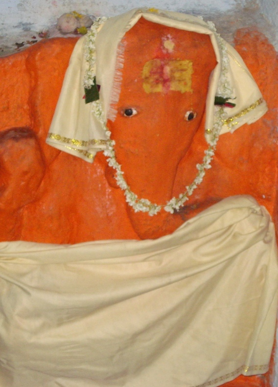

<?xml version="1.0" encoding="UTF-8"?><rss version="2.0"
	xmlns:content="http://purl.org/rss/1.0/modules/content/"
	xmlns:wfw="http://wellformedweb.org/CommentAPI/"
	xmlns:dc="http://purl.org/dc/elements/1.1/"
	xmlns:atom="http://www.w3.org/2005/Atom"
	xmlns:sy="http://purl.org/rss/1.0/modules/syndication/"
	xmlns:slash="http://purl.org/rss/1.0/modules/slash/"
	>

<channel>
	<title>YAKSH VINAYAK &#8211; Varanasi Temples</title>
	<atom:link href="index.html" rel="self" type="application/rss+xml" />
	<link>../../../../index.html</link>
	<description>Temples of Varanasi as referred to in Kashi Khand</description>
	<lastBuildDate>Thu, 19 Jun 2025 05:16:46 +0000</lastBuildDate>
	<language>en-US</language>
	<sy:updatePeriod>hourly</sy:updatePeriod>
	<sy:updateFrequency>1</sy:updateFrequency>
	<generator>https://wordpress.org/?v=4.6.29</generator>
	<item>
		<title>YAKSH VINAYAK</title>
		<link>../../../../vinayak-temples/yaksh-vinayak/yaksh-vinayak/index.html</link>
		<pubDate>Fri, 07 May 2010 02:03:38 +0000</pubDate>
		<dc:creator><![CDATA[ramana]]></dc:creator>
				<category><![CDATA[YAKSH VINAYAK]]></category>
		<category><![CDATA[Vinayak Temples]]></category>

		<guid isPermaLink="false">../../../../p=67.html</guid>
		<description><![CDATA[(YAKSH VINAYAK) Yaksh Vinayak is located at Ck.37/29, Rudra Prayag, Kotwalpura. Yaksh Vinayak removes all obstacles and smoothens the lives of devotees.  Devotees can travel upto Bansphatak Vishwanath Gulli by rickshaw and walk on foot to this place. This deity is situated inside a house in the Gully on the left side and some inconvenience may be [&#8230;]]]></description>
				<content:encoded><![CDATA[<p></p>
<p style="text-align: center;"><strong>(YAKSH VINAYAK)</strong></p>
<p>Yaksh Vinayak is located at Ck.37/29, Rudra Prayag, Kotwalpura. Yaksh Vinayak removes all obstacles and smoothens the lives of devotees.  Devotees can travel upto Bansphatak Vishwanath Gulli by rickshaw and walk on foot to this place. This deity is situated inside a house in the Gully on the left side and some inconvenience may be caused in worshipping.</p>
]]></content:encoded>
			</item>
	</channel>
</rss>
